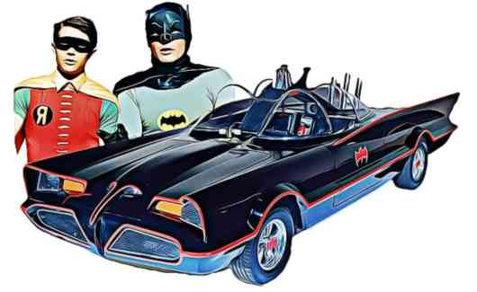

Carrocería, Modelo y Producción Generación : Firebird 3rd Gen. - 1982 New Model Tipo de Carrocería : Coupé Num. de Puertas : 3 puertas
Carrocería, Modelo y Producción Generación : Charger 2nd Gen. (B-body) - 1969 Update Tipo de Carrocería : Coupé Num. de Puertas : 2 puertas
Carrocería, Modelo y Producción Generación : Falcon 3 Tipo de Carrocería : HatchBack Num. de Puertas : 2 puertas
Dentro de las menciones honorificas encontramos a "La máquina del tiempo" de Back to the Future, el Batimovil de Batman the classic tv series y por último pero no menos importante Ecto 1 de los cazafantasmas.

Si a usted le interesa tener su propio Batimóvil, tan sólo precisa u$s 216.000. Es lo que cuesta las réplicas que desarrolla Bob Butts siguiendo el diseño licenciado por el mismo Barris (El creador original del auto de la serie de tv).
Posiblemente el DeLorean DMC-12 habría pasado sin pena ni gloria por la historia del automóvil si no llega a ser escogido para convertirse en máquina del tiempo en 'Regreso al Futuro'. De hecho es muy pero que muy probable.
La extraña pero curiosa combinación del diseño de una ambulancia y la forma de un auto fúnebre terminó convirtiéndose en el producto final.